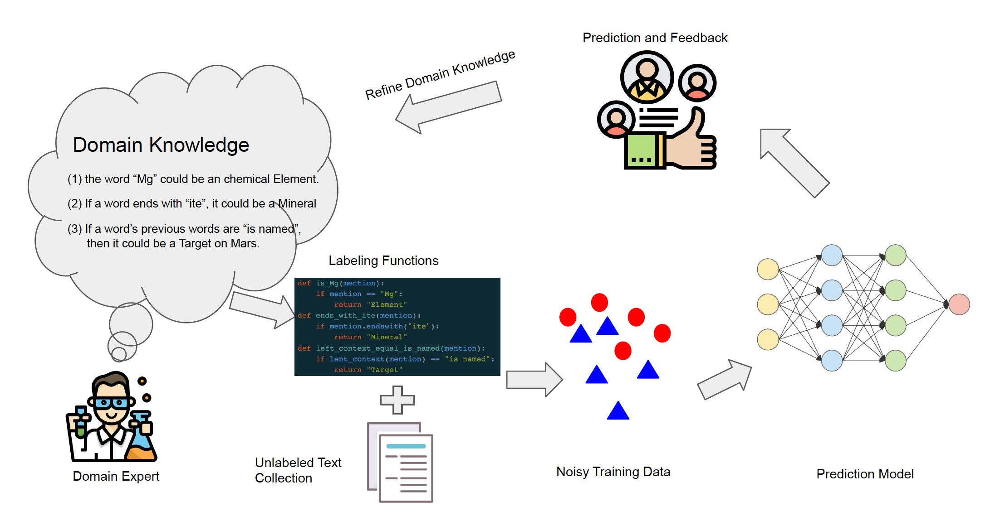
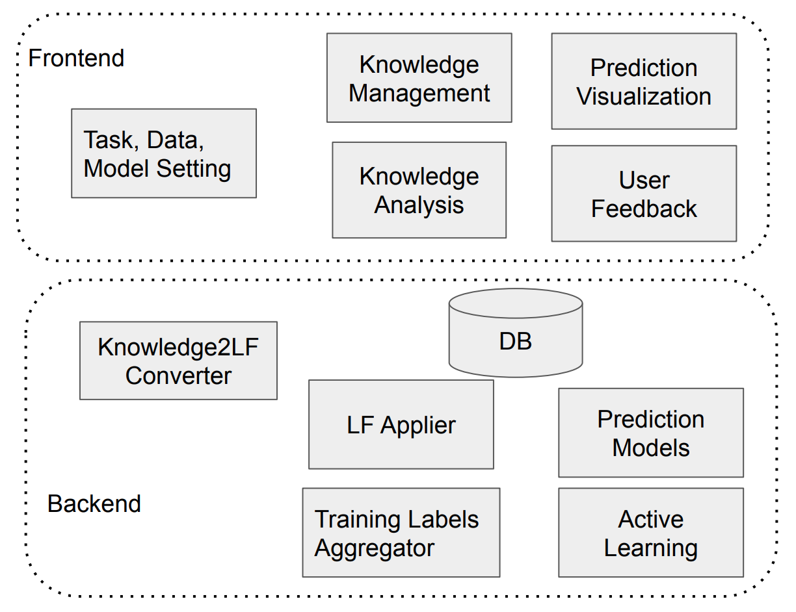
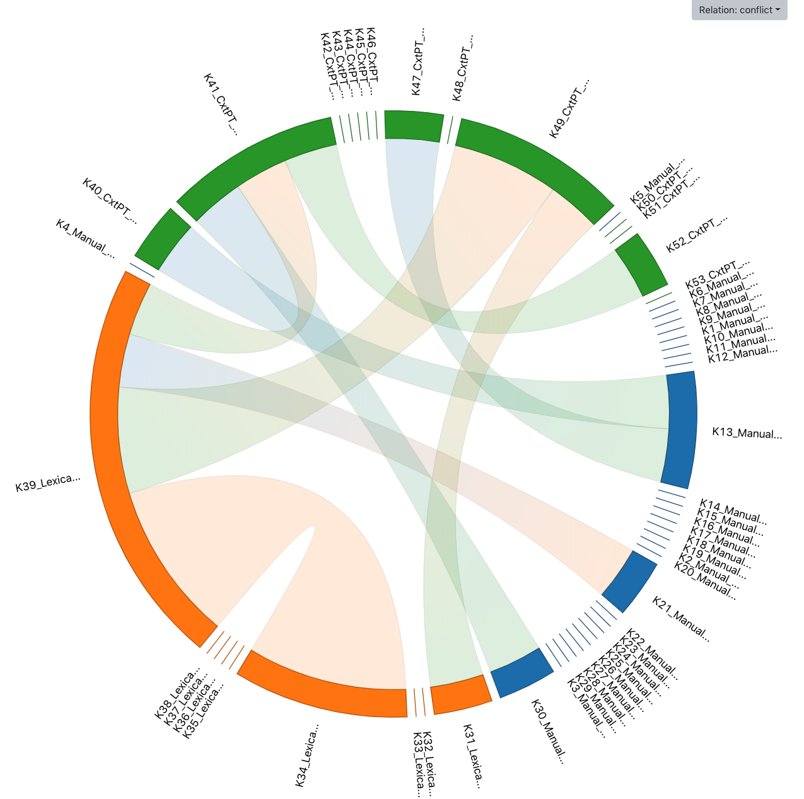

A Teachable and Domain Robust Semantic Information Extraction System
What is THIRSTY?
THIRSTY is an information extraction (IE) system that allows users to easily and quickly build an IE system of good performance without any writing any codes. THIRSTY uses experimental results to demonstrate effectiveness in semantic entity recognition and relation classification tasks in medical and scientic domains.

Figure 1. The workflow of THIRSTY
Without manual annotation, THIRSTY takes advantage of experts' knowledge directly
to obtain weakly labeled data and then train an IE model using the
generated weak labels.
The basic usage flow is shown in Figure 1. First, domain experts input
their knowledge, in the form of functions, that are useful to identify specific entities or relations.
Second, the system will automatically convert their knowledge descriptions
into labeling functions, and then collect labels by
applying the labeling functions on the data. Since the labels generated
by different labeling functions could be conflict and noisy. The system
uses a generative model to clean and aggregate the
weakly generated training labels. Finally, the automatically labeled
data will be used to train final prediction entity recognition or
relation extraction models.
How is THIRSTY built?
As shown in Figure 2, THIRSTY has the following components:
System configuration component that uses spaCy to preprocessthe text documents.
Knowledge input and management component
that provides Example, Lexical, and Contextual knowledge types for tasks.
Knowledge2LF converter
that converts knowledge descriptions to labeling functions and generates weak labels
Knowledge analysis component
that allows users to investigate knowledge properties and mutual relations.
Builtin ER and RE models
that allows users to easily train models based on the generated weak training data.
the User feedback collector and active learning component
that allows user to actively choose training samples to enhance the model performance.

Figure 2. The architecture of THIRSTY
What can THIRSTY do?
One of our core component, knowledge analysis, as shown in Figure 3, is introduced in as following:
From Knowledge2LF converter, we will obtain a label matrix after applying labeling functions on a dataset. With the label matrix, THIRSTY performance direct analysis of the characteristics and quality of each knowledge description. Users can analyze each knowledge entry by accessing its coverage,
i.e., how many data points are labeled, overlaps and conflicts with all other knowledge entries.
In addition, THIRSTY also provides graphical visualization component to show the overlaps and conflicts of each pair of knowledge entries using a chord diagram.

Figure 3. Knowledge analysis of THIRSTY
How does THIRSTY work?
To get more informatio about how THIRSTY works and how to use it, please refer to the following video.
THIRSTY Download and Installation
The download and installation information of THIRST will be released soon.